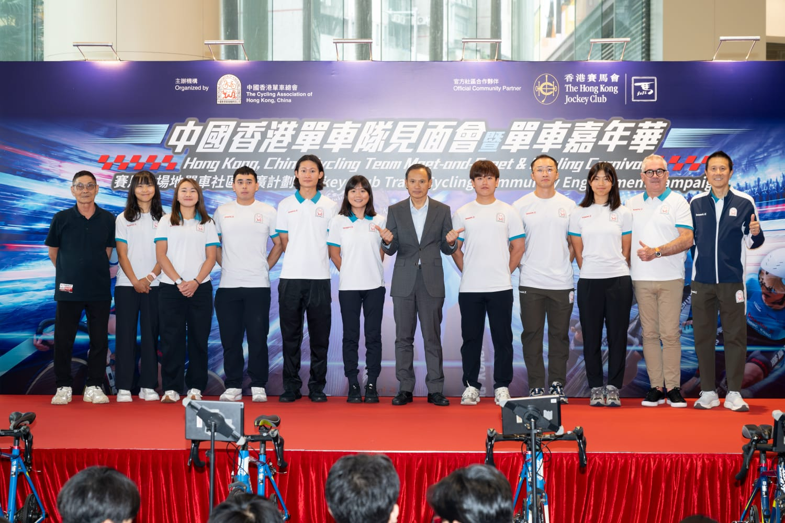
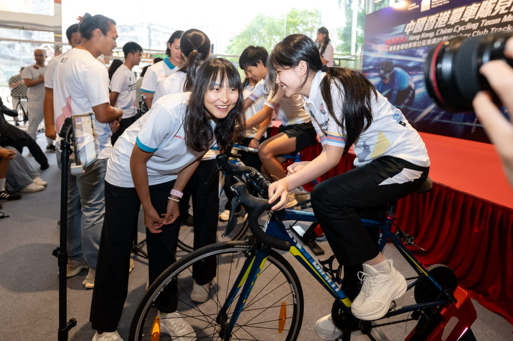
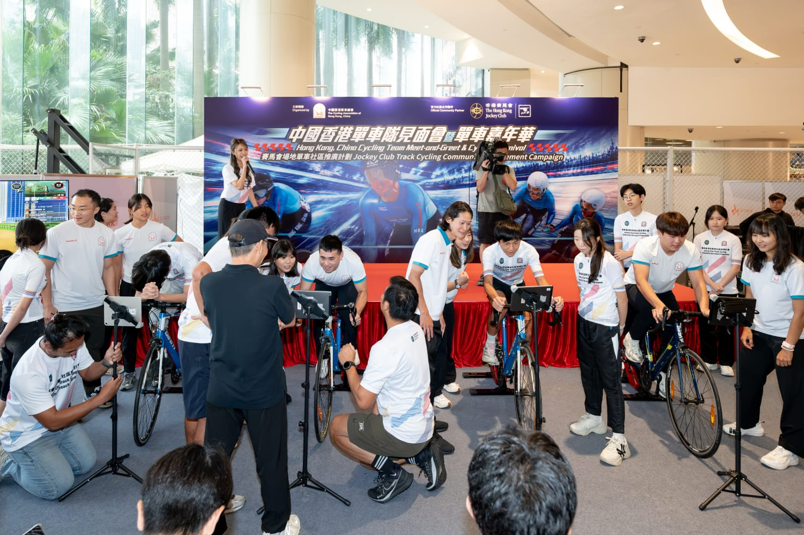
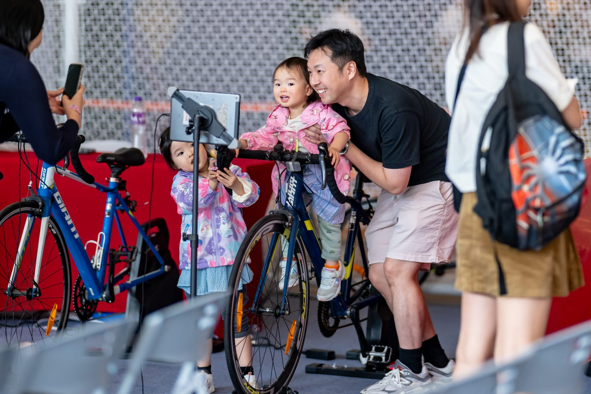
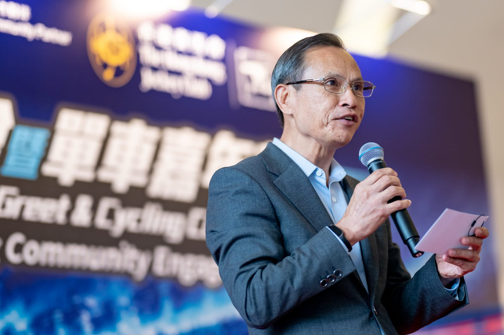

港隊車手、總教練達海飛及單車總會主席梁鴻德等出席見面會大合照
cycling2026-11-14 18:20 · 中國香港單車總會
港隊單車嘉年華荃灣開鑼 李思穎升世界第一後首度會市民 明年4月世界盃主場爭奧運資格
中國香港單車總會今日喺荃灣愉景新城舉行「單車嘉年華」及「中國香港單車隊見面會」，港隊總教練達海飛聯同李思穎及一眾車手與學生及市民交流。嘉年華由11月13至15日舉行，設八大動感關卡，免費開放。李思穎今年10月首登UCI場地單車女子中長距離世界排名第一；港隊明年4月23至25日主場出戰世界盃，目標爭取2028年洛杉磯奧運入場券。



